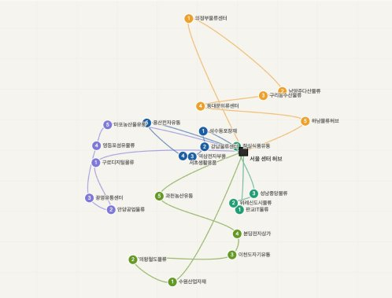

직전 모놀리식(omin)에서 한 도메인 결함이 전체를 멈추고, 특정 도메인 전용 기술(PostGIS)을 전 팀원이 설치해야 했던 비효율을 직접 겪고 도메인별 독립 배포·기술 선택이 가능한 MSA로 확장. B2B 도메인을 코드에 녹이기 위해 DDD 4계층(헥사고날)을 적용하고, 서비스 간 통신은 "검증=동기(Feign), 통지=비동기(Kafka)"로 의도적으로 분리했습니다.
| 트랙 | 역할 | 인원 | 배정 방식 |
|---|---|---|---|
| 허브 배송 담당자 | 허브 간 화물 이동 (경기도 허브 → 부산 허브) | 전체 10명 | 대기시간·순번 기반 라운드로빈 |
| 업체 배송 담당자 | 최종 허브 → 수령 업체 배송 | 허브당 10명 | OR-Tools VRPTW (시간창·차량 부하 균등) |
두 트랙의 업무는 명확히 분리 — 허브 배송 담당자는 허브 → 업체 배송 불가, 업체 배송 담당자는 허브 간 배송 불가. 이 도메인 특성을 코드로 강제하기 위해 배정 알고리즘 자체를 트랙별로 분리(라운드로빈 / VRPTW)했습니다.
12개의 마이크로서비스를 Spring Cloud Gateway · Eureka로 묶고, 통신은 검증=동기(Feign), 통지=비동기(Kafka Outbox)로 분리합니다. 바운디드 컨텍스트별 PostgreSQL 분리(database-per-service)로 서비스 독립성·장애 격리를 확보했습니다.
설계 의도: 12개 서비스를 7개 바운디드 컨텍스트(파선)로 묶고, 각 컨텍스트는 자기 PostgreSQL을 가짐(database-per-service).
배송 컨텍스트는 처음엔 delivery / delivery_manager / delivery_route 3개 서비스로 분할 시도했으나,
강한 응집성·동일 트랜잭션 경계 요구 때문에 delivery-service 한 컨텍스트로 통합하고 내부 도메인으로 분리.
| 결정 | 대안 | 선택 이유 — 트레이드오프 명시 |
|---|---|---|
| MSA + DDD 헥사고날 | 모놀리식 (omin) | 직전 omin에서 한 도메인 결함이 전체를 멈추고 도메인 전용 기술(PostGIS)을 전 팀원이 설치해야 했던 비효율 직접 경험 → 도메인별 독립 배포·기술 선택이 가능한 MSA로. |
| database-per-service | 공유 DB · schema 분리 | 바운디드 컨텍스트별 PostgreSQL 분리 → 서비스 독립성·장애 격리. 데이터 정합성은 Outbox 이벤트로 별도 보장. |
| "검증=동기, 통지=비동기" 통신 분리 | 전부 동기 / 전부 비동기 | 정합성 검증("이 hub가 있나?")은 응답을 받아야 진행 가능 → 동기(Feign). 삭제 통지는 응답 불필요 → 비동기(Kafka). 의도적 분리. |
| Outbox 패턴 | Saga · 2PC · 직접 Kafka 발행 | 단방향 통지·응답 불필요라 full Saga는 과함. 2PC는 분산 트랜잭션 회피. 직접 발행은 유실/유령 이벤트 위험 → at-least-once + 결과적 일관성의 Outbox가 적정. |
| 단일 인스턴스 → 분산 락 생략 | ShedLock · 리더 선출 | 각 서비스 단일 인스턴스 배포 토폴로지 → Outbox 스케줄러 중복 실행 자체가 발생 X. 수평 확장 시 ShedLock + 컨슈머 멱등 처리 추가 예정. |
P · 업체 삭제 시 주문·상품 등 타 서비스 통지가 필요한데, "DB 커밋 → Kafka 발행" 사이 발행 실패 시 이벤트 영구 유실(DB는 지워졌는데 남들은 모름), 발행 후 DB 롤백 시 유령 이벤트(다른 서비스는 삭제됐다고 알고 처리). 분산 트랜잭션(2PC)은 가용성을 해치고 MSA와 부적합.
A · 삭제 트랜잭션 내 OutboxEvent(PENDING) 원자 저장 → DB 커밋과 함께 커밋(또는 함께 롤백). OutboxEventScheduler가 @Scheduled(fixedDelay=10000)로 10초마다 PENDING을 Kafka로 발행→PUBLISHED. 실패 시 PENDING 유지 → 다음 주기 자동 재발행.
R · 분산 트랜잭션 없이 at-least-once 발행 + 결과적 일관성 보장. 단위 테스트로 단일 이벤트 실패가 나머지 발행을 막지 않음 검증.
// 업체 삭제 트랜잭션 내 Outbox 원자 저장 @Transactional public void deleteCompany(UUID companyId) { companyRepository.delete(companyId); outboxRepository.save(new OutboxEvent( "company.deleted", companyId, payload, "PENDING" )); // 같은 트랜잭션 — 원자 보장 } // 10초마다 PENDING → Kafka @Scheduled(fixedDelay = 10000) public void publish() { outboxRepository.findByStatus("PENDING").forEach(event -> { kafkaTemplate.send(event).addCallback( ok -> outboxRepository.markPublished(event.getId()), fail -> log.warn("retry next tick") ); }); }
P · 외부 서비스 호출이 타임아웃까지 블로킹되면 대기 스레드 누적 → 내 서비스까지 연쇄로 죽음(cascading failure). 단순 동기 호출은 한 서비스 장애가 전체로 번지는 구조.
A · 통신 의도를 의도적으로 분리: "정합성 검증=동기(Feign)", "삭제 통지=비동기(Kafka)". user/hub/order 호출은 @CircuitBreaker + @Retry로 감쌈. CB(window 10·실패율 50%·OPEN 10s·slow-call 3s·retry 3회/500ms)로 fallback 즉시 반환.
R · CB OPEN 시 즉시 fallback 반환 → 대기 스레드 누적·연쇄 장애 차단. CB 상태전이(OPEN/CLOSED/HALF_OPEN)·호출차단·slow-call 전체 로깅.
@Retry(name = "hubService") @CircuitBreaker(name = "hubService", fallbackMethod = "hubServiceFallback") public boolean validateHubExists(UUID hubId) { return hubClient.exists(hubId); // 동기 검증 } private boolean hubServiceFallback(UUID hubId, Throwable t) { log.warn("Hub validation fallback — CB OPEN. hubId={}", hubId); return false; // 즉시 반환 → 스레드 점유 X }
| 설정 항목 | 값 | 의도 |
|---|---|---|
| sliding window | 10 calls | 최근 10콜로 실패율 산출 → 단발성 오류와 구분 |
| failure rate threshold | 50% | 절반 이상 실패면 OPEN — 과민 반응 회피 |
| wait in OPEN | 10s | 외부 서비스 복구 시간 부여 |
| half-open calls | 3 | OPEN 해제 전 시험 호출 — 다시 죽으면 OPEN 복귀 |
| slow call threshold | 3s | 응답 자체가 느린 케이스도 CB 트리거 |
| retry | 3회 / 500ms | 일시적 네트워크 결함 흡수 |
P · B2B 물류는 업체 영업시간(예: "오전 9~11시 입고")이 SLA의 핵심. 어기면 계약 위반 → 시간창을 제약(constraint)으로 모델링해야지, 후처리 정렬로는 보장 불가. 단순 라운드로빈은 거리·시간창·차량 부하 균등을 못 고려해 비효율.
A · CompanyDeliveryAssignmentScheduler가 @Scheduled(cron="0 0 6 * * *")로 매일 06:00 실행. 허브별 당일 배송을 모아 VRPTW 경로 최적화. 트랙 분리: 허브 간=라운드로빈, 업체=OR-Tools VRPTW. Haversine 시간/거리 행렬 → time dimension(+30분 버퍼·최대 480분) → 차량당 상한 ceil(총건/담당자수)(부하 균등) → 시간창 ±30분 → solver PATH_CHEAPEST_ARC + GUIDED_LOCAL_SEARCH(타임리밋 5초). infeasible 시 시간창 단계적 완화 재시도, 그래도 실패면 예외. 스케줄러 레벨 3회 수동 재시도(10초 간격).
R · 시간창 제약을 first-class로 모델링해 SLA 보장 가능한 자동 배정 체계 확보. infeasible 시 시간창 완화로 가용성도 확보.
// VRPTW 핵심 구성 RoutingIndexManager manager = new RoutingIndexManager( nodes, vehicles, depot ); routing.AddDimension( timeCallback, 30, // 30분 버퍼 (slack) 480, // 최대 라우트 시간 8시간 false, "Time" ); // 차량당 상한 — 부하 균등 int maxPerVehicle = (int) Math.ceil((double) total / vehicles); // 솔버 — 휴리스틱 + 로컬 서치 + 5s 타임리밋 RoutingSearchParameters params = main.defaultRoutingSearchParameters() .toBuilder() .setFirstSolutionStrategy(FirstSolutionStrategy.PATH_CHEAPEST_ARC) .setLocalSearchMetaheuristic(LocalSearchMetaheuristic.GUIDED_LOCAL_SEARCH) .setTimeLimit(Duration.ofSeconds(5)) .build();
왜 일괄(batch)인가 — 실시간 배정 = 들어오는 순서대로 그리디 → 국소 최적(지금 가까운 사람에게 줬더니 나중 배송이 꼬임). VRPTW는 당일 전체를 한 번에 모아야 전역 최적. B2B는 "즉시"보다 "오늘 안 정시 배송"이 중요 → 일괄이 비즈니스에 더 맞음.

P · 배송담당자 등록 시 "최대 seq 조회 → +1 저장" 사이 동시 요청이 끼면 Read-Modify-Write race → 같은 seq가 두 번 발급.
A · @Lock(LockModeType.PESSIMISTIC_WRITE)로 최대 seq row를 select for update. 대안 검토: 낙관적 락은 어차피 매번 충돌하는 채번엔 재시도 비용만 누적, 분산 락은 단일 인스턴스 토폴로지엔 과함 → "충돌 잦고 짧은 임계구역"엔 비관적 락이 최적이라 판단.
R · 동시 등록 요청에서도 seq 유일성 보장. 재시도 로직 없이 DB 레벨 원천 차단.
@Lock(LockModeType.PESSIMISTIC_WRITE) @Query("select dm from DeliveryManager dm " + "where dm.hubId = :hubId order by dm.seq desc") Optional<DeliveryManager> findTopByHubIdOrderBySeqDesc(UUID hubId); // → SELECT ... FOR UPDATE — 동시 요청은 대기 후 순차 처리
3단계 학습 곡선 연결 — 전 회사의 비동기 다운로드 race condition을 해결하면서 "정확히 어떤 락이 어느 상황에 맞는지" 몰랐던 게 학습 동기. 부트캠프 스터디에서 낙관적/비관적/분산 락 트레이드오프를 자청 발표. 본 프로젝트에서 "충돌 잦고 짧은 임계구역엔 비관적 락"을 실제로 적용 — 한 사이클 완결.
특정 일자에 업체 시간창이 좁고 배송 물량이 몰리면 OR-Tools가 infeasible 반환 → 자동 배정 실패. 단순 예외 throw는 가용성 저하.
시간창 ±30분 → ±60분 → ±90분 단계적 완화 재시도. 그래도 실패면 ROUTE_OPTIMIZATION_FAILED 예외로 운영자에게 알림. 스케줄러 레벨에서도 3회 수동 재시도(10초 간격).
hub-service 일시 장애 시 company-service의 검증 호출이 타임아웃까지 블로킹 → 대기 스레드 누적 → company-service 자체 응답 지연.
Resilience4j CB로 감싸 OPEN 시 fallback 즉시 반환. 스레드 점유 시간 = 타임아웃 → ~수 ms로 단축. onStateTransition·onCallNotPermitted·onSlowCallRateExceeded 전부 로깅으로 검증.
배송담당자 동시 등록 시 Read-Modify-Write race → 같은 seq가 두 번 발급될 수 있음.
@Lock(PESSIMISTIC_WRITE)로 최대 seq row를 select for update. 재시도 로직 없이 DB 레벨 원천 차단. 동시 등록 시나리오 단위 테스트로 유일성 검증.
| 영역 | 스택 |
|---|---|
| Backend | Java 17 · Spring Boot 3.5.12 · Spring Cloud 2025.0.1 (Eureka · Gateway · OpenFeign) |
| Messaging | Spring Kafka · Outbox 패턴 |
| Resilience | Resilience4j · Circuit Breaker · Retry |
| Data | PostgreSQL (database-per-service) · Redis · JPA · QueryDSL |
| Optimization | Google OR-Tools 9.12.4544 (VRPTW) |
| Infra | Docker Compose |
"아쉬운 점"을 한 덩어리로 두면 의도적 트레이드오프와 진짜 실수가 섞여 약점처럼 보입니다. 여러 옵션을 따져본 결과 현 규모에 적절했던 선택과 더 챙겼어야 하는 부분을 명확히 구분합니다.
delivery / delivery_manager / delivery_route 3개 서비스로 분할했으나, 실제 도메인 분석 결과 3개 도메인이 동일 트랜잭션 경계에서 함께 변경되는 강한 응집성을 보임 → 별도 서비스로 분리하면 분산 트랜잭션 비용만 증가한다고 판단해 delivery-service 한 컨텍스트로 통합 + 내부 도메인으로 분리.
delivery_manager-service가 독립 서비스로 그려졌으나, 도메인 분석을 거치며 delivery-service 내 도메인으로 통합 결정. 다만 초기 그림과 디렉터리 구조를 즉시 정리하지 못함 → 검토자가 코드와 그림이 다르다는 인상을 받을 위험.